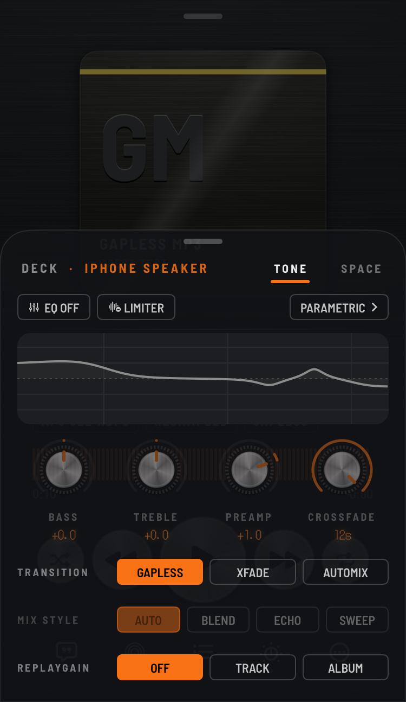
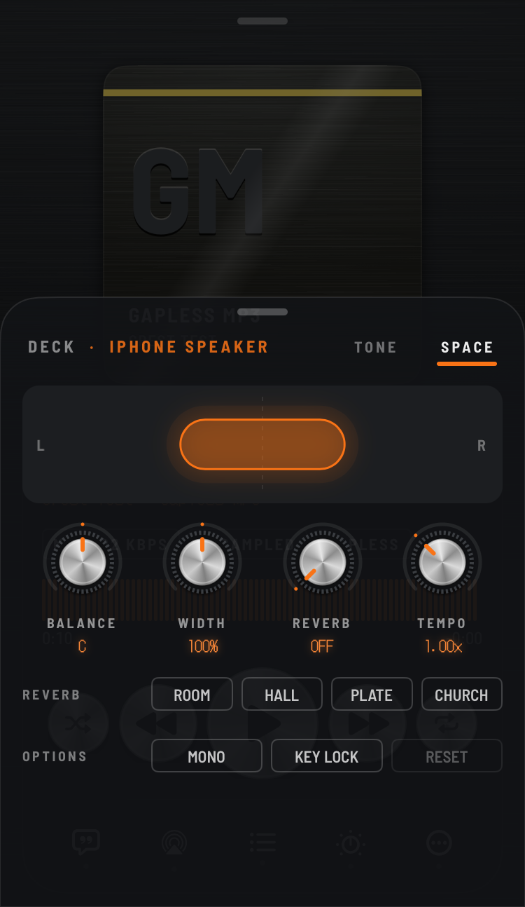
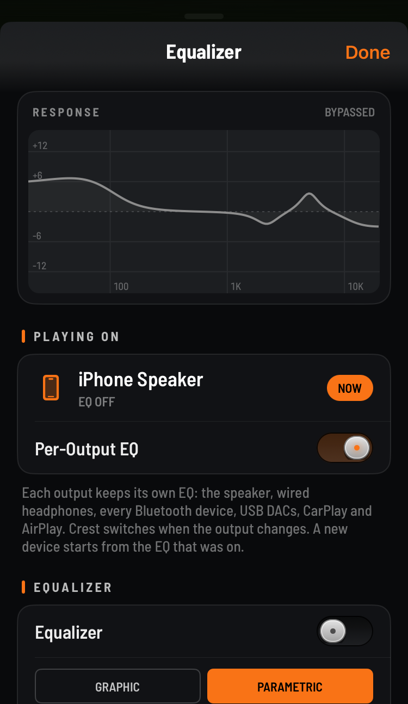
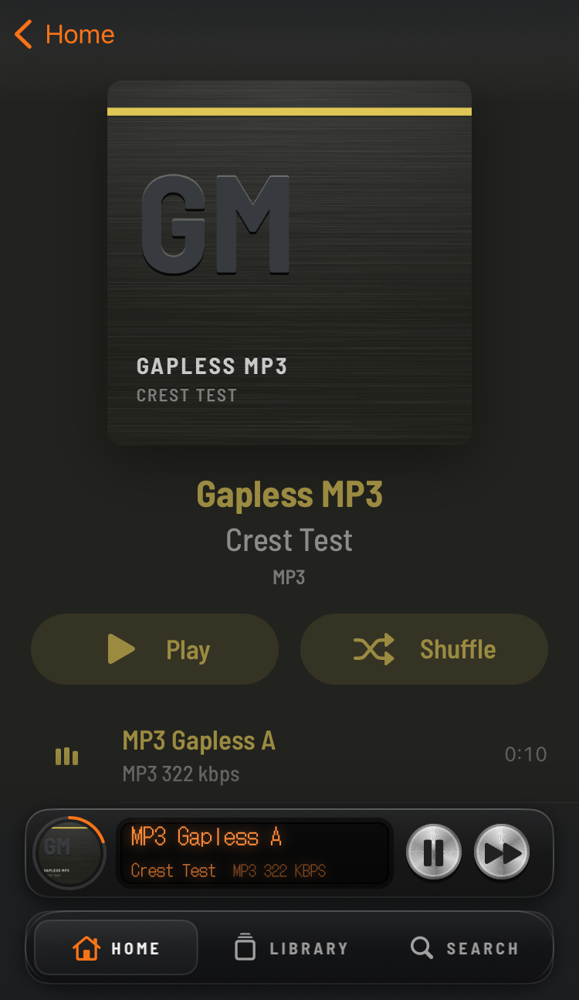

Crest
A music player for your own songs that plays them exactly as good as the files are.
No streaming, no account, no tracking. It looks like hi-fi gear, not an Apple Music clone.
Jailbroken: add the repo, then search Crest. Not jailbroken: grab the .tipa or .ipa.
Get your music in
Three ways. Your files stay yours, in their own format.
Songs synced to the Music app from a computer, or bought on iTunes, show up on their own. No copies. Your play counts and ratings come along.
Open it in Crest, then drag songs or folders onto the page it shows in your computer's browser. Works on every build.
Library → Add from Files. Or drop files in Crest's music folder with Filza.
Made for you if…
Pick the one that sounds like you.
Everything it can do
The full list, for the audio nerds. Items marked new came in beta 3.
Plays almost anything
Each format through the best decoder for it.
- FLAC
- ALAC
- WAV
- AIFF
- MP3
- AAC
- Opus
- Vorbis
- APE
- WavPack
- Musepack
- TAK
- TTA
- WMA
- DSD (DSF / DFF)
- CUE sheets
Playback
Crest only resamples when your output can't play the file's rate, and tells you.
- Bit-Perfect mode, proven sample for sample
- BIT-PERFECT label, and why when it isn't
- Each song at its own sample rate
- RESAMPLED tag when it has to
- Gapless
- Crossfade
- Automix
- ReplayGain (track / album)
- EBU R128 loudness
- Queue comes back after a relaunch
- Shuffle and repeat
- Sleep timer
- Stop after this song
Automix
A DJ-style transition, not a plain fade.
- Starts on the beat
- Tempo match
- Bass swap
- Echo out
- Filter sweep
- Loudness matched
- Albums stay gapless
Sound: the Deck
Swipe up on the player.
- 16-band parametric EQ
- Graphic EQ
- AutoEQ import
- Bass, treble, preamp knobs
- Limiter
- Balance
- Stereo width
- Mono
- Reverb: room, hall, plate, church
- Tempo
- Key lock
An EQ for every output
Crest switches the moment the output changes.
- Speaker
- Wired headphones
- Each Bluetooth device
- USB DACs
- CarPlay
- AirPlay
Library
- Albums
- Artists
- Genres
- Folders
- Songs
- Search
- Playlists
- Smart playlists with rules
- Star ratings
- Play counts
- History and stats
- Pinned albums
- Tag editor
- File info: format, bit depth, rate
- Music app songs
- Scan progress for big libraries
Lyrics & extras
- Synced lyrics
- Word-by-word lyrics
- Online lyrics (LRCLIB, opt-in)
- ListenBrainz
- Last.fm
- Now Playing widget
- CarPlay
- Lock Screen & Control Center
- Visualizer
- Stereo field view
The look
"Smoked Acrylic Hi-Fi": smoked glass over brushed black, spun-aluminium keys, a dot-matrix display.
- Mint
- Amber
- Ice
- Rose
- Violet
- Lime
- Orange
- OLED Black
- Album pages coloured by the cover
- Made-up covers for songs without art
- Minimal Player layout
- Optional L/R VU meters
- Knobs with detents
- Haptics
Screenshots







Which one do I get?
Same app, three ways to install. Pick the row that matches your phone.
| Your phone | Get | Music app songs | CarPlay | Add music with |
|---|---|---|---|---|
| Jailbroken (rootless) | The repo | Yes | Yes | Wi-Fi Transfer, Files, Filza |
| TrollStore | .tipa | Yes | Yes | Wi-Fi Transfer |
| Not jailbroken | sideload .ipa | No (sandbox) | No | Wi-Fi Transfer |
Private by default
Offline
No analytics, no ads, no account. Crest only goes online for scrobbling or online lyrics, and both stay off until you turn them on.
Wi-Fi Transfer is locked
It only runs while its screen is open, and your computer needs the PIN shown on the phone.
Your files, untouched
Songs from the Music app are read where they are. Nothing is copied, converted or uploaded.
Questions
Can it play my Apple Music songs?
Not the subscription downloads: Apple locks them so only the Music app can play them. Songs you synced from a computer, bought on iTunes or uploaded to iCloud Music Library work.
Does it copy my Music app library?
No. The jailbreak and TrollStore builds read those songs where they already are, so there's no extra storage used.
It just says "Scanning…"
The first scan opens every song once to read its format and loudness, which takes a few minutes on a big library. Keep Crest open until it finishes; leaving the app pauses it.
Is it really bit-perfect?
Each song plays at its own sample rate when your output supports it. If the output can't, Crest resamples and shows a RESAMPLED tag, so you always know.
Does CarPlay work?
It's built in for the jailbreak and TrollStore builds but hasn't been tried in a real car yet. If you try it, please report back.
A song won't play or sounds wrong.
Open an issue with your build (.deb, .tipa or .ipa), iOS version and the file's format (Crest shows it under Get Info).
Tested on
| Build | Chip / phone | iOS |
|---|---|---|
| Jailbreak | A13 | 16.2, 17.5.1 |
| Jailbreak (beta 1) | A10, A13 | 15.8.6, 18.6.2 |
| Sideload | iPhone 17e | 27 beta |